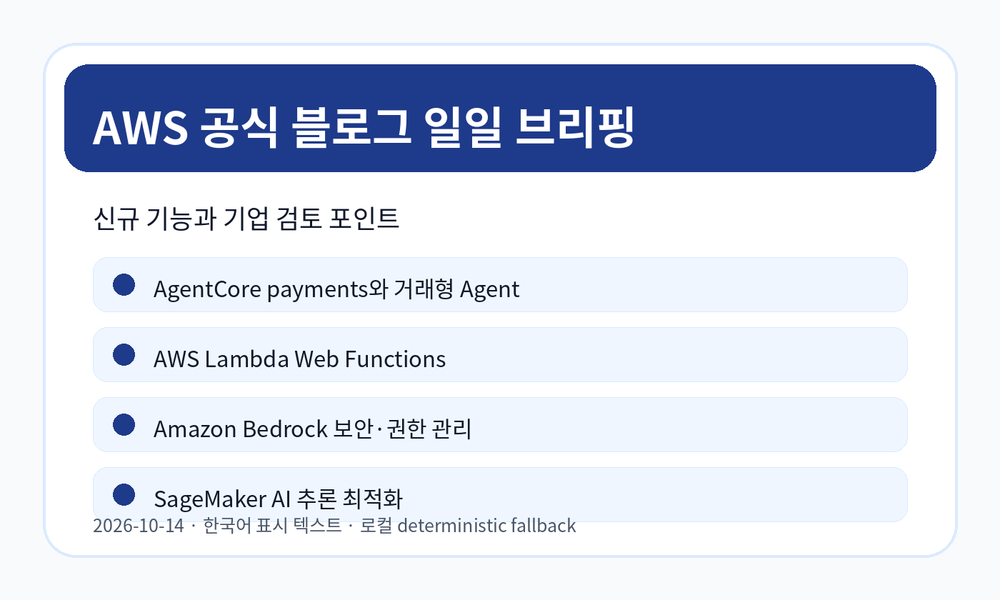
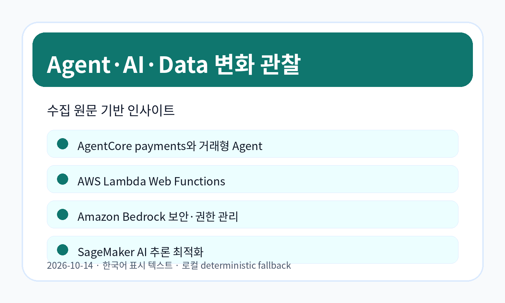
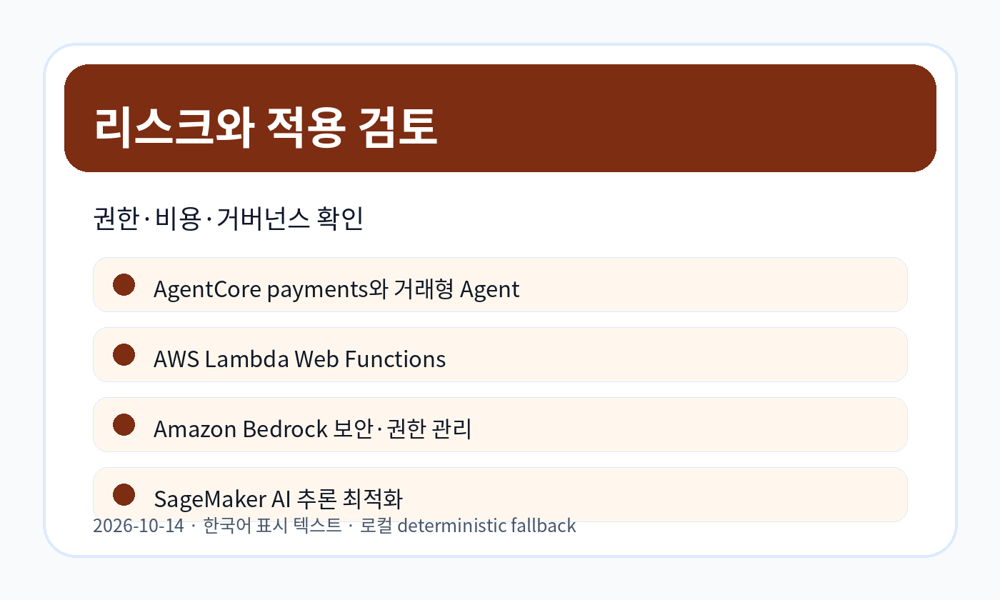

AWS 주간 업데이트: Prime Day 2026, Claude Haiku 5.5, Amazon Nova 2.5 Sonic 주요 소식
원문은 Prime Day 2026 관련 지표와 Claude Haiku 5.5, Amazon Nova 2.5 Sonic 등 AWS 주간 업데이트를 정리합니다.
원문 보기공식 RSS에서 수집한 원문을 먼저 보존하고, LLM Wiki와 GBrain 저장 이후 이번 자료에서 관찰되는 변화만 한국어로 정리했습니다.
이번 실행에서 신규 원문을 저장했습니다.

원문은 Prime Day 2026 관련 지표와 Claude Haiku 5.5, Amazon Nova 2.5 Sonic 등 AWS 주간 업데이트를 정리합니다.
원문 보기원문은 빠르고 일관된 웹 애플리케이션 성능을 위한 AWS Lambda Web Functions 발표를 다룹니다.
원문 보기원문은 Anchor Browser와 Amazon Bedrock AgentCore payments를 이용해 Agent가 웹 기반 거래 흐름을 수행하는 구성을 설명합니다.
원문 보기원문은 Amazon Bedrock의 private pricing offer를 managed entitlements로 관리하는 방식을 설명합니다.
원문 보기원문은 Orca Security가 Amazon Bedrock 기반 자연어 보안 질의 기능을 구현한 내용을 설명합니다.
원문 보기원문은 How ShipStation Global built an AI IT help desk on Amazon Bedrock AgentCore 주제의 AWS 공식 블로그 업데이트를 설명합니다.
원문 보기원문은 Build long-horizon agents with Grok 4.7 on Amazon Bedrock 주제의 AWS 공식 블로그 업데이트를 설명합니다.
원문 보기원문은 Mixture-of-Experts kernel engineering on Amazon SageMaker AI 주제의 AWS 공식 블로그 업데이트를 설명합니다.
원문 보기이번 수집 범위에서는 AgentCore payments, Amazon Bedrock 기반 보안 질의, Amazon Bedrock 가격·권한 관리, AWS Lambda Web Functions 등 애플리케이션 실행과 AI 기능 통합 지점의 업데이트가 함께 관찰되었습니다. 이는 단일 모델 성능보다 결제, 권한, 웹 실행, 보안 질의처럼 실제 업무 흐름에 붙는 구성요소를 함께 검토해야 한다는 신호로 해석할 수 있습니다.

관찰된 사실 — 원문은 Prime Day 2026 관련 지표와 Claude Haiku 5.5, Amazon Nova 2.5 Sonic 등 AWS 주간 업데이트를 정리합니다.
기업 의사결정 시사점/리스크/기회 — 주간 업데이트는 신규 모델·서비스 출시 신호를 빠르게 확인하는 채널이므로, 실제 적용 전 리전·가격·지원 범위를 별도로 점검해야 합니다.
관찰된 사실 — 원문은 빠르고 일관된 웹 애플리케이션 성능을 위한 AWS Lambda Web Functions 발표를 다룹니다.
기업 의사결정 시사점/리스크/기회 — 웹 프런트엔드·API 경계에서 서버리스 선택지가 늘어나는 만큼, 기존 배포 구조와 지연시간·관찰성·권한 모델을 비교 검토해야 합니다.
관찰된 사실 — 원문은 Anchor Browser와 Amazon Bedrock AgentCore payments를 이용해 Agent가 웹 기반 거래 흐름을 수행하는 구성을 설명합니다.
기업 의사결정 시사점/리스크/기회 — Agent가 결제·트랜잭션까지 다루는 경우 브라우저 실행, 결제 권한, 감사 추적, 실패 처리 경계를 함께 검토해야 합니다.
관찰된 사실 — 원문은 Amazon Bedrock의 private pricing offer를 managed entitlements로 관리하는 방식을 설명합니다.
기업 의사결정 시사점/리스크/기회 — 생성형 AI 사용 계약이 복잡해질수록 가격·권한·조직 단위 배포 정책을 분리해 관리할 필요가 있습니다.
관찰된 사실 — 원문은 Orca Security가 Amazon Bedrock 기반 자연어 보안 질의 기능을 구현한 내용을 설명합니다.
기업 의사결정 시사점/리스크/기회 — 보안 분석에 자연어 질의를 적용할 때는 권한 범위, 질의 해석 오류, 감사 가능한 근거 제시를 함께 설계해야 합니다.
관찰된 사실 — 원문은 How ShipStation Global built an AI IT help desk on Amazon Bedrock AgentCore 주제의 AWS 공식 블로그 업데이트를 설명합니다.
기업 의사결정 시사점/리스크/기회 — 적용 전 지원 리전, 권한, 비용, 기존 운영 도구와의 연동 가능성을 확인해야 합니다.
관찰된 사실 — 원문은 Build long-horizon agents with Grok 4.7 on Amazon Bedrock 주제의 AWS 공식 블로그 업데이트를 설명합니다.
근거 출처 URL — https://aws.amazon.com/blogs/machine-learning/build-long-horizon-agents-with-grok-4-7-on-amazon-bedrock
기업 의사결정 시사점/리스크/기회 — 적용 전 지원 리전, 권한, 비용, 기존 운영 도구와의 연동 가능성을 확인해야 합니다.
관찰된 사실 — 원문은 Mixture-of-Experts kernel engineering on Amazon SageMaker AI 주제의 AWS 공식 블로그 업데이트를 설명합니다.
근거 출처 URL — https://aws.amazon.com/blogs/machine-learning/mixture-of-experts-kernel-engineering-on-amazon-sagemaker-ai
기업 의사결정 시사점/리스크/기회 — 적용 전 지원 리전, 권한, 비용, 기존 운영 도구와의 연동 가능성을 확인해야 합니다.

| 기사 | 게시 | 카테고리 |
|---|---|---|
| AWS 주간 업데이트: Prime Day 2026, Claude Haiku 5.5, Amazon Nova 2.5 Sonic 주요 소식 | 2026-10-14 | AI/ML |
| AWS Lambda Web Functions 발표와 웹 애플리케이션 실행 방식의 선택지 확대 | 2026-10-13 | Compute |
| Anchor Browser와 AgentCore payments로 거래형 Agent를 구성하는 방법 | 2026-10-14 | AI/ML |
| Amazon Bedrock 민간 가격 제안 관리를 위한 managed entitlements 활용 | 2026-10-14 | AI/ML |
| Orca Security가 Amazon Bedrock으로 자연어 보안 질의를 구현한 사례 | 2026-10-14 | AI/ML |
| How ShipStation Global built an AI IT help desk on Amazon Bedrock AgentCore 관련 AWS 공식 업데이트 | 2026-10-14 | AI/ML |
| Build long-horizon agents with Grok 4.7 on Amazon Bedrock 관련 AWS 공식 업데이트 | 2026-10-14 | AI/ML |
| Mixture-of-Experts kernel engineering on Amazon SageMaker AI 관련 AWS 공식 업데이트 | 2026-10-14 | AI/ML |
이 리포트는 이번 cron 실행에서 확보한 원문과 메타데이터만 분석했습니다. 원문 진위 검증과 외부 교차검증은 수행하지 않았으며, 수집 실패 또는 접근 제한 항목은 확인 필요로 표시했습니다.